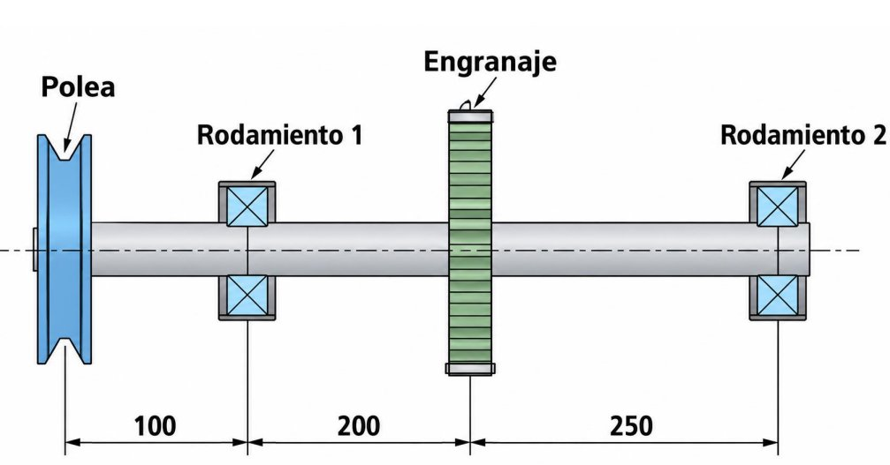
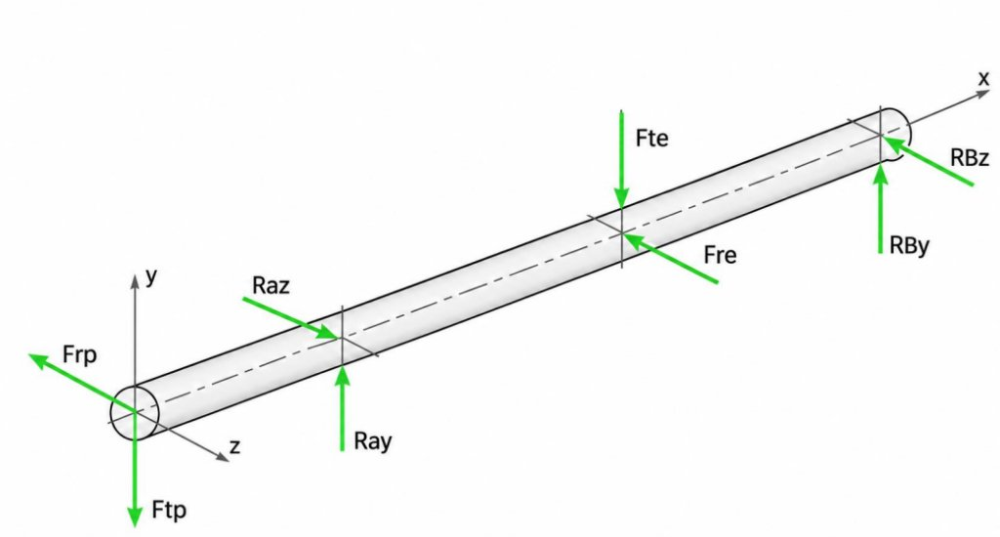
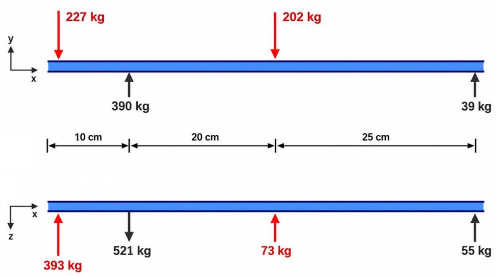
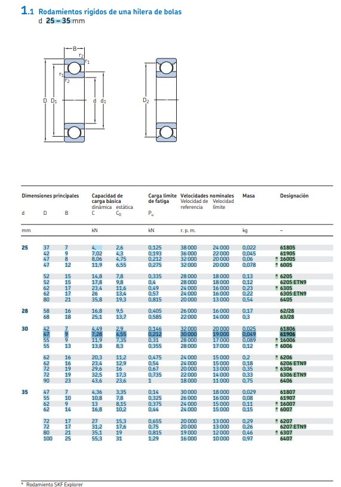

Eje Intermediario de Transmisión n = 2400 rpm



Plano Técnico CAD y Corte Seccional SKF 1.1 — Rodamientos Rígidos de Bolas

Tabla oficial del Catálogo General SKF (página 326/328) con dimensiones principales (d, D, B), capacidad de carga básica dinámica (C), estática (C0), carga límite de fatiga (Pu) y velocidades admisibles para los asientos de d = 40 mm (Apoyo 1, SKF * 6308) y d = 30 mm (Apoyo 2, SKF 61906).
Panel de Control TP 6
SQL Query LiveCatálogo SKF • Opciones para Apoyo 1 (d = 40 mm)
Click en fila para elegir| Designación | D [mm] | B [mm] | C [kN] | C0 [kN] | L10h [h] |
|---|
Catálogo SKF • Opciones para Apoyo 2 (d = 30 mm)
Click en fila para elegir| Designación | D [mm] | B [mm] | C [kN] | C0 [kN] | L10h [h] |
|---|
Cálculo Avanzado SKF Explorer & Verificaciones Normativas (ISO 281 / ISO 76)
Procedimiento Oficial SKF de Selección y Verificación — Guía Técnica Paso a Paso
Metodología normalizada del Catálogo General SKF (Págs. 62–95) para el Trabajo Práctico N° 6
1 Paso 1: Análisis de Fuerzas Externas y Carga Dinámica Equivalente P (ISO 281) ▼
A partir de los diagramas de cargas en los planos ortogonales x-y y x-z, se combinan las reacciones en cada apoyo para obtener la fuerza radial resultante Fr:
2 Paso 2: Selección del Tipo y Tamaño en Catálogo General SKF (Tabla 1.1) ▼
Los diámetros de los muñones vienen predeterminados por el diseño resistente del árbol de transmisión:
- Apoyo 1: Asiento d₁ = 40 mm → Se consulta la Tabla 1.1 (Pág. 328). Se comparan las series 618, 619, 160, 60, 62 y 63. El modelo seleccionado es * 6308 con C = 42,3 kN, C₀ = 24,0 kN y Pu = 1,02 kN.
- Apoyo 2: Asiento d₂ = 30 mm → Se consulta la Tabla 1.1 (Pág. 326). El modelo seleccionado es 61906 con C = 20,3 kN, C₀ = 11,2 kN y Pu = 0,475 kN.
3 Paso 3: Cálculo de la Vida Útil Nominal Básica L10 y L10h (ISO 281) ▼
Ecuación normalizada de fatiga para rodamientos rígidos de bolas con contacto puntual (p = 3):
4 Paso 4: Verificación con la Vida Requerida según Tabla 9 del Catálogo SKF ▼
La Tabla 9 del Catálogo General SKF (Pág. 87) define la vida útil recomendada en horas de funcionamiento continuo según el tipo de máquina:
Observación técnica: La vida nominal básica L₁₀h del Apoyo 1 (2020 h) evalúa únicamente la fatiga subsuperficial bajo condiciones estándar sin considerar los beneficios del lubricante elastohidrodinámico ni la pureza del acero Explorer. Por ello, el procedimiento oficial SKF exige aplicar la Vida Nominal SKF Modificada (Paso 5).
5 Paso 5: Cálculo de la Vida Útil Modificada SKF Explorer (L10m con Factor aSKF) ▼
Según la norma ISO 281 y la teoría tribológica de SKF (Págs. 65–75), la vida real ajustada incorpora el factor aSKF:
6 Paso 6: Verificación de Carga Estática de Seguridad s0 (ISO 76, Tabla 11) ▼
Para rodamientos giratorios que requieren funcionamiento silencioso y sin deformaciones permanentes admisibles (Catálogo SKF Pág. 93, Tabla 11), debe comprobarse que:
7 Paso 7: Verificación de Carga Mínima Requerida Frm y Velocidades Límite ▼
A la velocidad de servicio (n = 2400 rpm), debe verificarse que la carga sea suficiente para evitar que las bolas patinen sobre la pista de rodadura debido a su inercia centrífuga: